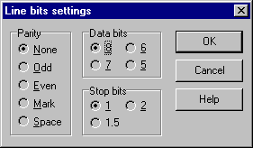

Параметры асинхронного коммуникационного порта: номер, скорость обмена, flow control и количество бит.
Скорости обмена свыше 38400 следует использовать с большой осторожностью, т.к. аппаратура или операционная система может не успевать обрабатывать поток, об этом может свидетельствовать появление в хронологическом журнале ошибок CE_BREAK, CE_OVERRUN, CE_FRAME, и.т.д.

Диалог установки битовых параметров линий вызывается нажатием кнопки "Change" окна настройки коммуникационных портов.
Возможность работы средствами TAPI активизируется выбором пункта TAPI раскрывающегося списка COM Port и устройства, соответствующего модему, из списка TAPI Device.
Главное преимущество использования средств TAPI заключается в возможности одновременной работы нескольких приложений с устройствами компьютерной телефонии (в случае Радиуса, с модемом). Для этого все одновременно запускаемые приложения должны иметь возможность работать посредством TAPI.
В общем виде схема взаимодействия приложений через TAPI выглядит следующим образом. При входящем звонке операционная система принимает вызов и уведомляет о нем приложения, зарегистрированные в системе для данного типа устройства (в случае Радиуса, для модема). Одной из таких программ и передается звонок. Если программа способна определить тип данных для обмена с удаленной стороной (факс, голосовой вызов, бинарные данные), то она может передать соединение другим, специализированным, программам. При необходимости совершить исходящий вызов приложения посылают операционной системе запрос на захват устройства (модема), после чего и совершается вызов средствами TAPI. Однако в каждом конкретном случае возможны свои нюансы, связанные со способом захвата приложениями общих ресурсов.
Включение параметра Intercept shared calls дает Радиусу указание захватывать входящие вызовы. Данная опция предназначена для взаимодействия с сервером удаленного доступа (RAS) Windows. После захвата вызова Радиус определяет, предназначался ли звонок ему или RAS, и при необходимости передает RAS соединение.
Примером программы, способной передать Радиусу входящее соединение для приема/передачи бинарных данных, является VentaFax®. При использовании VentaFax опция Intercept shared calls должна быть выключена.
Параметр Direct access предназначен главным образом для тестовых целей и включает монопольный доступ Радиуса к модему, при котором остальные приложения не могут использовать модем. С точки зрения пользователя, данный режим ничем не отличается от работы напрямую через COM-порт.
После включения режима TAPI требуется отредактировать управляющие последовательноти для модема (см. Конфигурация модемов).
См. также Соединения посредством RAS.